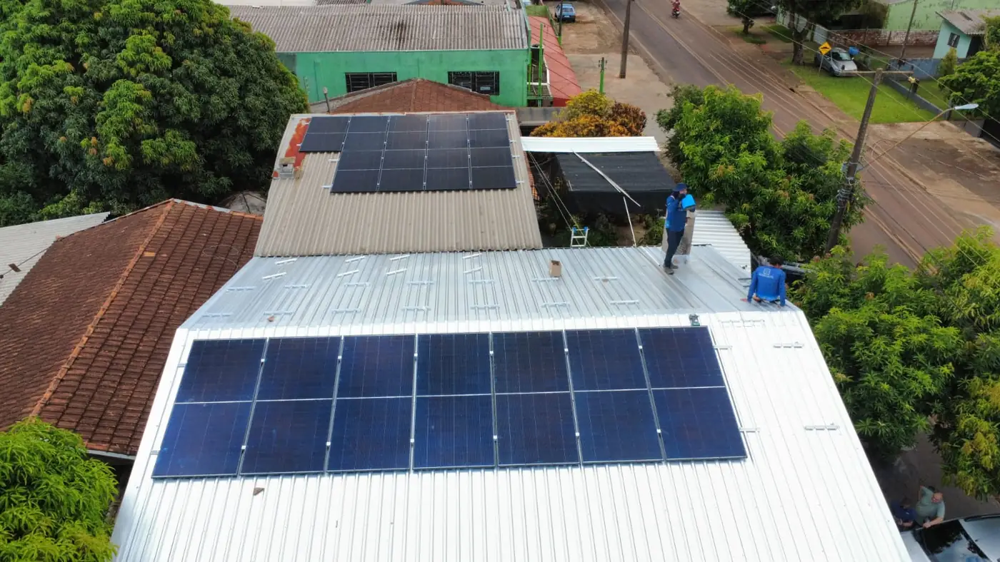
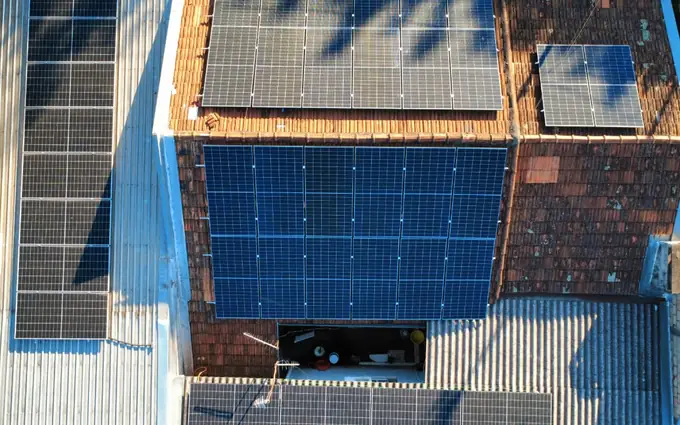
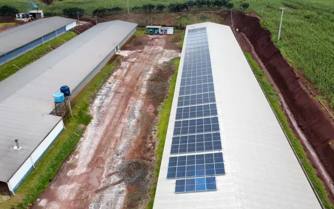
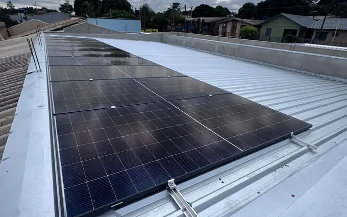
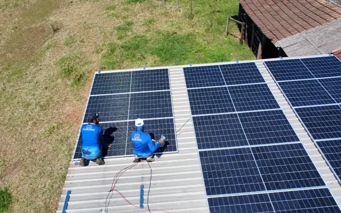

Residencial
Para casas e sobrados em Cascavel. Retorno médio entre 4 e 6 anos e valorização imediata do imóvel.

A M&A atende Cascavel com equipe própria, a partir da sede em Medianeira. Projeto elétrico assinado, ART no CREA-PR e homologação completa junto à Copel, do protocolo até a troca do medidor bidirecional. Orçamento calculado a partir da sua fatura real, sem estimativa de tabela.
Resposta em poucos minutos no horário comercialA M&A Soluções Energéticas tem sede em Medianeira e atende Cascavel com equipe própria. Visita técnica, instalação e comissionamento são realizados pela mesma equipe fixa, sem terceirização. A maioria das obras residenciais em Cascavel é concluída em dois a três dias úteis, com o cliente acompanhando cada etapa.
Cascavel concentra um perfil de consumo diversificado: residências em bairros consolidados, comércio intenso na região central, indústrias ao longo das rodovias BR-277 e PR-180, e zona rural expressiva com avicultura e grãos. Cada perfil exige análise dos doze meses de fatura — não uma estimativa de tabela. O tipo de telhado varia: cerâmica nas residências mais antigas, metálico nos galpões industriais e concreto nos condomínios. Cada combinação define o custo da estrutura de fixação e o tempo de montagem.
Todo projeto entregue em Cascavel vem com responsabilidade técnica registrada: projeto elétrico assinado por engenheiro eletricista habilitado no CREA-PR, ART recolhida e memorial de cálculo conforme a NBR 16690. As equipes trabalham com NR-10 e NR-35 em dia, com linha de vida em todo serviço em altura.
A homologação junto à Copel é conduzida pela M&A do primeiro protocolo até a efetiva troca do medidor bidirecional. O cliente não precisa comparecer à concessionária nem acompanhar documentos intermediários. Após a energização, o sistema de monitoramento envia alertas automáticos ao cliente e à equipe técnica.
Envie uma foto da sua fatura de energia. Devolvemos o cálculo de economia, o investimento estimado e o tempo de retorno para Cascavel e região.
Enviar minha conta de luz
Payback é a palavra mais usada e mais mal explicada no mercado solar. Empresa séria não fala em "retorno em quatro anos" sem ver a fatura. O prazo depende do consumo em kWh, da tarifa aplicada pela Copel e da orientação do telhado. Em Cascavel, o consumo noturno residencial retorna mais devagar que o consumo comercial diurno — e o dimensionamento correto parte dessa diferença.
Para comércio e serviços no centro de Cascavel, a coincidência entre o horário de pico de geração solar (9h–16h) e o horário de funcionamento do negócio maximiza o autoconsumo, reduzindo a dependência de créditos acumulados. Para residências, o perfil de consumo concentrado no fim do dia exige análise cuidadosa do tamanho do sistema para não superdimensionar.
A M&A entrega um relatório de viabilidade antes de qualquer proposta: geração estimada mês a mês, investimento detalhado por equipamento e prazo de retorno calculado com a tarifa atual da Copel. Se os números não fecharem a favor do cliente, dizemos antes de fechar o contrato.
Com módulos de 25 anos de garantia de performance, todo o período após o payback é lucro líquido. Em Cascavel, a irradiação média anual entre 4,8 e 5,1 kWh/m²/dia é suficiente para compensar o consumo da maioria dos perfis, com excedente que vira crédito para os meses de menor geração.
Dimensionamos conforme o histórico real de consumo dos últimos doze meses. Sistema subdimensionado não zera a conta; superdimensionado desperdiça investimento em geração que não será usada.
Para casas e sobrados em Cascavel. Retorno médio entre 4 e 6 anos e valorização imediata do imóvel.

Lojas, clínicas e escritórios em Cascavel. Consumo diurno coincide com o pico de geração — o retorno é mais rápido que no residencial.

Aviários, resfriadores de leite e irrigação no entorno de Cascavel. Elegível a crédito rural com juros reduzidos.

Análise de demanda contratada e modalidade tarifária. Ganho na geração e na correção de distorções da fatura industrial.

Zera o custo das áreas comuns e alivia a taxa condominial. Estudo formatado para apresentação em assembleia.

Limpeza técnica, termografia e diagnóstico de queda de geração — inclusive em sistemas de outras empresas em Cascavel.
Três perfis de consumo comuns na cidade, com potência, economia mensal projetada e prazo de retorno estimados. Os valores reais dependem da análise da sua fatura.
Consumo médio de 400 kWh/mês em bairro residencial de Cascavel. Sistema de 4,2 kWp instalado em telha cerâmica com gancho específico por modelo, sem perfuração da cobertura. Economia mensal projetada de R$ 340. Retorno estimado em cerca de 5 a 6 anos. A parcela de um financiamento em 84 meses costuma ficar próxima à conta atual.
Consumo médio de 900 kWh/mês em estabelecimento comercial funcionando das 8h às 18h. A coincidência entre o horário de operação e o pico de geração solar reduz a dependência de créditos. Sistema de 9 kWp. Economia projetada de R$ 765 por mês. Payback estimado entre 3 e 4 anos — retorno mais rápido que o residencial pelo perfil de uso diurno.
Consumo médio de 3.500 kWh/mês em indústria com operação diurna. Sistema de 35 kWp sobre telha metálica trapezoidal com grampo autobrocante e vedação butílica. Análise de demanda contratada inclusa. Economia projetada de R$ 2.975 por mês após a homologação na Copel. Retorno estimado em 3 a 4 anos.
Nesse patamar, o sistema costuma se pagar em menos de cinco anos. Vale calcular antes do próximo reajuste da Copel.
Em outubro de 2026, a ANEEL registrava 10.133 sistemas de energia solar conectados à rede em Cascavel, somando 191,7 MW de potência instalada.
A potência típica por sistema é de 6,0 kW (mediana). Nas residências, 5,6 kW, o que corresponde a cerca de 10 módulos de 550 W. No campo, 13,7 kW, e no comércio, 20,0 kW.
O porte define a duração da obra: sistemas residenciais ficam prontos em dois a três dias úteis, e os maiores levam mais tempo.
A geração varia com a estação. Em Cascavel, a irradiação no plano horizontal vai de 6,40 kWh/m² por dia em dezembro a 2,98 em junho, com média anual de 4,87.
Fontes: ANEEL, Relação de Empreendimentos de Geração Distribuída (dados de outubro de 2026); NASA POWER, climatologia de irradiação solar.
Garantia de 25 anos só tem valor se existir estrutura para acionar. Trabalhamos com fabricantes que mantêm suporte em território nacional.
Tecnologia monocristalina half-cell, com melhor desempenho em dias nublados. Garantia de 25 anos de performance linear e 12 anos contra defeito de fabricação.
String ou microinversores, definidos conforme sombreamento e orientação real do telhado em Cascavel. Em telhados com águas voltadas para lados diferentes, microinversor costuma render mais.
Alumínio anodizado e parafusos em inox 304, dimensionados para a carga de vento da região conforme NBR 6123. Fixação sem furo desnecessário — gancho específico por modelo de telha cerâmica, grampo autobrocante para metálica.
String box com DPS, fusíveis e disjuntores conforme NBR 16690 e exigências da Copel. É o item que a concorrência mais corta para baixar preço.
Aplicativo com geração em tempo real, histórico por período e alerta automático em caso de falha. Você acompanha do celular e nossa equipe recebe o mesmo alerta.
Cabos com dupla isolação e proteção UV, conectores MC4 originais e crimpagem com ferramenta específica. Sem emenda improvisada exposta ao sol.
Processo com prazo definido em cada etapa. Você sabe exatamente em que ponto está o seu projeto.
Avaliamos os doze meses de consumo para dimensionar sem sobra e sem falta, considerando a sazonalidade do uso em Cascavel.
Medimos o telhado, avaliamos a estrutura, verificamos o padrão de entrada e mapeamos sombreamentos no imóvel em Cascavel.
Você recebe o projeto elétrico, geração estimada mês a mês, investimento e payback calculado. Sem letra miúda.
Equipe própria com NR-35 e NR-10 em dia. A maioria das obras residenciais em Cascavel é concluída em dois a três dias úteis.
Toda a documentação é conduzida pela M&A, do protocolo inicial até a troca do medidor bidirecional. Você não fala com a Copel.
Registros de entrega feitos pela nossa equipe.


A M&A Soluções Energéticas tem sede em Medianeira, na Av. Brasil, 4212, e atende Cascavel e região com a mesma equipe fixa, sem terceirização. A mão de obra da instalação tem garantia de 5 anos. O prazo final depende da Copel. A finalização do nosso serviço leva em torno de 45 a 60 dias.
Cascavel tem irradiação solar média de 4,8 a 5,1 kWh/m²/dia ao longo do ano — acima da média europeia onde a tecnologia já é amplamente consolidada. Esse volume de irradiação é suficiente para compensar o consumo da maioria dos perfis, com excedente que vira crédito nos meses de menor incidência solar.
Além de Cascavel, atendemos com a mesma equipe as seguintes localidades:
Não encontrou sua localidade? Entre em contato mesmo assim — atendemos com frequência municípios vizinhos e, dependendo do porte do projeto, o deslocamento não altera o investimento final.
Em Cascavel, os dois tipos predominam: cerâmica nas residências e comércios dos bairros consolidados; metálica nos galpões industriais ao longo da BR-277 e nas propriedades rurais do entorno. Cada tipo define o custo da estrutura de fixação e o tempo de montagem.
Mais comum nas residências e comércios de Cascavel. A estrutura usa trilhos de alumínio anodizado com ganchos específicos por modelo de telha — sem furo na cobertura. Cada modelo exige um gancho diferente: canal, portuguesa, romana, francesa. O tempo de montagem varia conforme o estado do madeiramento e a inclinação do telhado.
Predomina nos galpões industriais e rurais de Cascavel. A fixação é feita com grampos autobrocantes na nervura da chapa mais vedação butílica em cada ponto — sem perfuração direta. O tempo de montagem é menor que em cerâmica, e a carga sobre a estrutura do telhado é inferior. Ponto de atenção: telhados metálicos transferem mais calor ao ambiente, um fator relevante em instalações que climatizam o espaço interno.
O mercado fotovoltaico cresceu muito rápido em Cascavel e na região Oeste do Paraná. Com o crescimento apareceu um problema: empresas que vendem sistema sem ter engenharia por trás. Antes de assinar qualquer contrato, vale verificar quatro pontos objetivos.
Todo sistema fotovoltaico instalado em Cascavel precisa de projeto elétrico assinado por profissional habilitado e ART recolhida no CREA-PR. Se a empresa não tem engenheiro eletricista no quadro, ela terceiriza a assinatura — e você fica sem responsável técnico quando algo der errado. Peça o número da ART antes de fechar o contrato: é dado público e verificável no portal do CREA-PR.
Pergunte diretamente quem executa a obra. Muitas revendas apenas vendem e repassam a instalação para equipes rotativas sem vínculo permanente. O resultado aparece meses depois: vazamento de telhado, conector mal crimpado ou inversor mal posicionado. A M&A usa equipe própria com NR-10 e NR-35 em dia em todos os trabalhos em Cascavel e na região.
Uma proposta séria precisa listar: marca e modelo dos módulos, modelo e potência do inversor, potência total em kWp, geração estimada mês a mês, proteções elétricas incluídas e o que está ou não coberto pela garantia. Orçamento com uma linha e um valor final não permite comparação nem auditoria posterior.
Se você já tem uma proposta de outra empresa para Cascavel ou região, a M&A analisa gratuitamente pelo WhatsApp: verificamos se o dimensionamento está correto, se os equipamentos têm representação no Brasil e se as proteções estão dentro da norma — sem compromisso de fechar com a gente.
Envie sua fatura pelo WhatsApp. Você recebe o estudo de viabilidade completo — sem custo e sem compromisso — com a economia projetada e o tempo de retorno do investimento.
Solicitar orçamento gratuito Atendimento humano · Seg a Sex · 8h às 18h · Sáb 8h às 12h